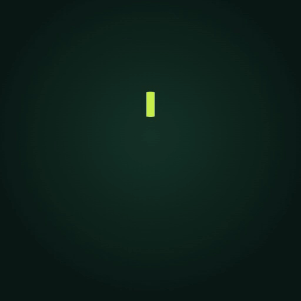
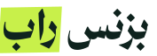
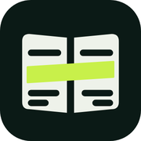
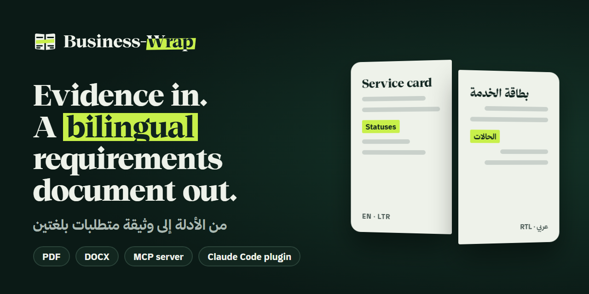
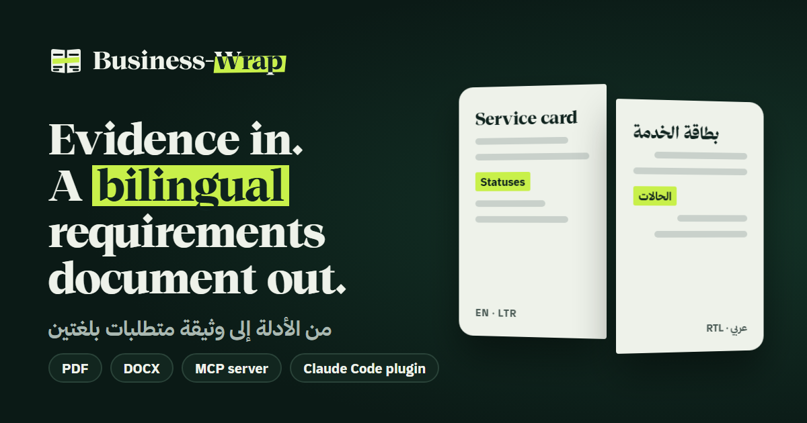

Ledger & Highlighter
Business-Wrap brand v2. Evidence, highlighted and bound: one fact marked once, carried into both editions, on one spine.
الهوية الجديدة لبزنس راب: دليل يظلل مرة واحدة، ويصل إلى النسختين العربية والإنجليزية على كعب واحد.
Two pages, one spine, one highlighter stroke across both.
Colour
Three roles carry the brand: ink, ledger green, highlighter lime. Switch the theme to see the dark values. Every text pair passes WCAG AA in both themes (contrast.md).
Contrast (from contrast.md)
| Pair | Use | Light | Dark |
|---|---|---|---|
ink / bg | body text | 14.78 | 15.78 |
ink-muted / bg | secondary text | 6.56 | 8.67 |
ink-faint / surface | captions | 4.67 | 5.39 |
primary / bg | links | 5.85 | 9.35 |
on-primary / primary | button label | 6.50 | 9.35 |
on-accent / accent | label on lime | 12.52 | 12.52 |
accent-strong / bg | accent as a graphic (3:1) | 4.96 | 13.65 |
line-strong / surface | input borders (3:1) | 3.58 | 4.01 |
Type
Thmanyah only. Serif Display for headlines, Serif Text for reading, Sans for the interface. Scale: major third on 16 px.
display 900 · 4xlRequirementsdisplay 900 · 2xlوثيقة المتطلباتtext 400 · mdThe page you edit is the page that prints.text 400 · mdالصفحة التي تحررها هي الصفحة التي تطبع.ui 700 · smExport · PDF · DOCX · تصديرmono · xsnpm run harvest:model -- process.bpmnLogo
The mark, the English and Arabic lockups, the wordmarks, and mono versions that follow the text colour. All text is outlined: no font is needed to show them.



Icons
22 icons for the tool's real concepts. Hover, focus or scroll to play their micro-animations. Open icons/index.html on its own for the full page.
Motion
Tap a card to play its duration and easing. The signature move is the sweep: a highlighter band grows from the reading start.
Social cards
Link previews with real words from the tool.

social/social-card.png · 1280x640
social/og.png · 1200x630